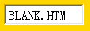

W3C CSS 2.1 规范规定，'background-color' 特性的默认值为 'transparent'，即透明，同时描述了透明（transparent）关键字可使其下的颜色能透出来。
关于 'background-color' 的详细信息，请参考：'background-color'。
IE6 IE7(Q) IE8(Q)中 BODY 元素的背景色不是 CSS 2.1 规范规定的 transparent，而是 #FFFFFF。
各浏览器 IFRAME 中的 BODY 元素的背景色不一致。
| IE6 IE7(Q) IE8(Q) |
|---|
在 Firefox Chrome Safari Opera 中，IFRAME 元素与其他元素一样，其 'background-color' 默认为 'transparent'，而在 IE 中， 通过 currentStyle 对象查看测得默认情况下 IFRAME 元素的背景色为 '#FFFFFF'，即为白色。所以默认情况下， 当我们为一个 IFRAME 元素设置背景色或者 IFRAME 元素将其祖先元素的背景色透过时，在非 IE 浏览器中 IFRAME 所引入的页面的 BODY 元素也“透出”这个颜色， 而 IE 中 BODY 元素依然为其默认的白色。
IE 中 IFRAME 元素有一个专有的 'allowtransparency' 属性，参见：http://msdn.microsoft.com/zh-cn/library/ms533072(en-us,VS.85).aspx。 当设置了该属性后，IFRAME 元素可以透明。
下面通过一个例子观察 'allowtransparency' 属性对 IE 中的 IFRAME 元素的影响：
<iframe id="i1" src="2.htm"></iframe> <iframe id="i2" src="2.htm"
style="background:red;"></iframe> <iframe id="i3" src="2.htm"
allowtransparency="true"></iframe> <iframe id="i4" src="2.htm" style="background:red;"
allowtransparency="true"></iframe>
在IE中效果如下：
| document.getElementById("i1").currentStyle.backgroundColor | #FFFFFF |
| document.getElementById("i2").currentStyle.backgroundColor | #FFFFFF |
| document.getElementById("i3").currentStyle.backgroundColor | transparent |
| document.getElementById("i4").currentStyle.backgroundColor | red |
下面看看加入 'allowtransparency=true'代码：
<html> <head> </head> <body style="background:gold;"> <iframe
allowtransparency="true" src="blank.html" frameborder="1" width="100" scrolling="no"
height="26"></iframe> </body> </html> blank.html： <html> <head>
</head> <body style="margin:4px;"> BLANK.HTM </body> </html>
在各浏览器中效果如下：
| IE6 IE7(Q) IE8(Q) | IE7(S) IE8(S) Firefox Chrome Safari Opera |
|---|---|
|  |
IE7(S) IE8(S)已经达到了 IFRAME 全透明化，而 IE6 IE7(Q) IE8(Q) 看上去依然不是透明的。
IE6 IE7(Q) IE8(Q) 中 BODY 元素的背景色不是 CSS 规定的 transparent，而是 #FFFFFF。这个 #FFFFFF 是由
'background-color:window' 得来，'window' 值是 Windows 系统主题设定的“窗口背景色”，这个设置会影响很多程序的窗口背景色，而其他浏览器多不受此影响。
所以虽然 IFRAME 元素已经透明，但其引入的子页面中的 BODY 元素的背景色不是透明，这样让人无法将 IFRAME 的背景色“透到”子页面的 BODY 元素之上。从而使得 IFRAME 元素在设置了 allowtransparency 属性后看上去依然不是透明。
更多内容，参见微软公司官方文档：Using IFRAME Elements。
IFRAME 透明是一个常见的问题，有时候我们需要其透明，这时需要为 IFRAME 元素添加属性 allowtransparency， 同时保证引入子页面的 BODY 元素的背景色是透明的，当被引入的页面不是我们能控制的时，可以通过 IFRAME.contentWindow.documnet.body.backgroundColor="transparent" 来使其透明。 若不需要 IFRAME 的透明背景，为使非 IE 浏览器中呈现 IE 中的默认白色背景，可以直接为 IFRAME 设置白色背景色。
| 操作系统版本: | Windows 7 Ultimate build 7600 |
|---|---|
| 浏览器版本: |
IE6
IE7 IE8 Firefox 3.6 Chrome 5.0.342.2 dev Safari 4.0.4 Opera 10.50 |
| 测试页面: |
RC3001.html
blank.html |
| 本文更新时间: | 2010-07-20 |
IFRAME background-color transparent 背景色 透明